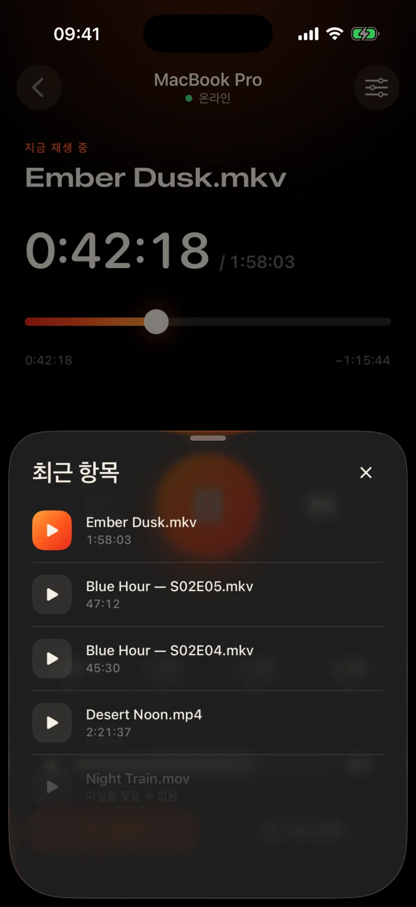
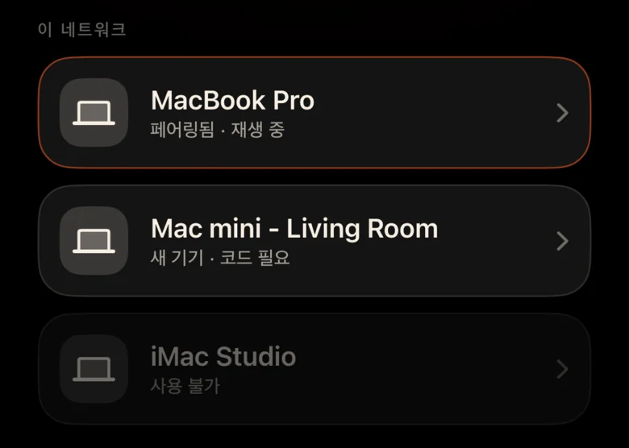
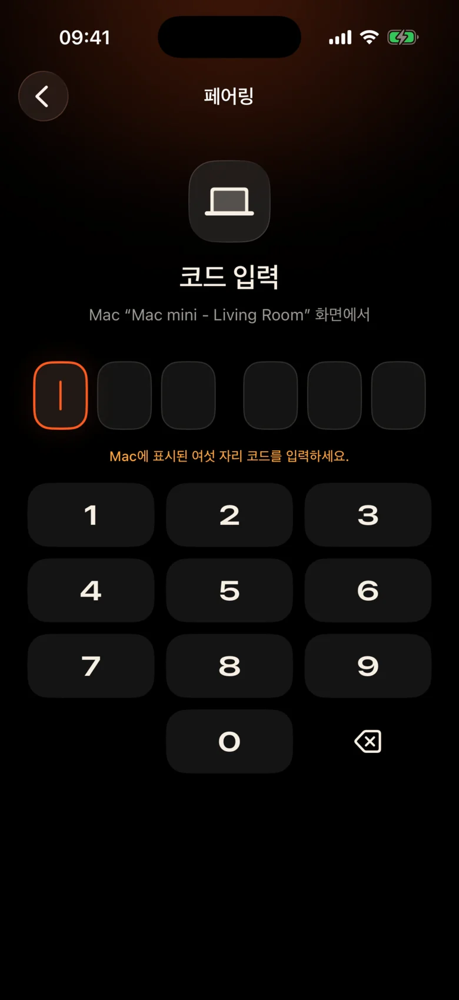

Mac는 방 건너편에 있습니다.
벽을 통해 프로젝터에 연결되어 있습니다. 일시 정지할 때마다 일어나서 어둠 속에서 트랙패드를 찾고 작은 컨트롤 바를 눈으로 가늘게 뜨는 것을 의미합니다.
Kinrox: 손에 들고 있는 휴대폰에서 일시 정지를 탭하세요.
벽을 통해 프로젝터에 연결되어 있습니다. 일시 정지할 때마다 일어나서 어둠 속에서 트랙패드를 찾고 작은 컨트롤 바를 눈으로 가늘게 뜨는 것을 의미합니다.
Kinrox: 손에 들고 있는 휴대폰에서 일시 정지를 탭하세요.
한 장면에서는 속삭이고, 다음 장면에서는 폭발이 일어나고, 옆방에서는 누군가가 이미 자고 있습니다.
Kinrox: 엄지 손가락 바로 아래에 볼륨 슬라이더가 있습니다.
IP 주소와 비밀번호가 포함된 웹 패널, 잠들어 있는 브라우저 탭, 소파용이 아닌 책상용으로 만들어진 버튼.
Kinrox: Mac를 자체적으로 찾아 하나의 코드와 쌍을 이룹니다.

누를 때마다 큰 목표, 어둡고 따뜻한 테마, 가벼운 햅틱 탭이 적용됩니다. 영화에서 눈을 떼지 않고도 사용할 수 있습니다.
졸릴 때도 쉽게 누를 수 있도록 모든 버튼이 충분히 큽니다.
줄을 놓쳤나요? 뒤로 한 번 탭하세요. 2개로 소개를 건너뛰세요.
Kinrox 자체 볼륨(0~100). Mac의 시스템 볼륨은 그대로 유지됩니다.
동일한 폴더의 이전 및 다음 파일(Finder 순서)
이전에 시청한 콘텐츠를 선택하세요. Mac에서 열립니다.
타임라인을 원하는 순간으로 드래그하고, 소파에서 전체 화면으로 전환하세요.
IP 주소도 없고, 비밀번호도 없고, 계정도 없습니다. 첫 번째 코드 이후 iPhone는 자동으로 다시 연결됩니다.
파일을 Kinrox로 드래그하거나 ⌘ O를 누릅니다. 원격 서버는 기본적으로 켜져 있습니다.
Kinrox는 두 장치가 모두 동일한 Wi-Fi에 연결되어 있으면 자체적으로 표시됩니다.

Mac는 2분 동안 지속되는 코드를 보여줍니다. 세 번 잘못 시도했는데 사라졌습니다.


Alex’s iPhone 기기가 Kinrox를 제어하려고 합니다. 휴대폰에 이 코드를 입력하세요.
 코드 만료까지 1:47
코드 만료까지 1:47
비디오는 인터페이스입니다. 필요할 때 얇은 유리 층이 나타나고 3초 후에 숨겨집니다.

mpv 및 IINA의 엔진인 libmpv를 기반으로 구축되었습니다. 내장 또는 외부 오디오와 자막을 선택하세요. VideoToolbox는 하드웨어 디코딩을 처리합니다.
Kinrox는 폴더에 동영상을 정렬하고 에피소드가 끝나면 다음 동영상을 시작합니다. Finder처럼 '10' 앞에 '2'가 표시됩니다.
키보드 ⏯ 키, 제어 센터 및 Now Playing 제어 Kinrox. 시작 화면에는 최대 20개의 최근 파일이 표시됩니다.
Mac 및 iPhone는 로컬 네트워크를 통해 직접 재생 명령을 교환합니다. 귀하의 비디오는 Mac에 유지됩니다.
Bonjour를 통한 검색, 자체 서브넷에서만 연결. 공개 주소 및 휴대전화는 거부됩니다.
모든 명령은 암호화된 채널을 통해 이동됩니다. 페어링 토큰은 두 장치의 키체인에 있습니다.
X25519HKDF-SHA256ChaCha20-Poly1305계정이나 사용량 분석이 없습니다. Mac는 고유 식별자나 시스템 프로파일링 없이 매일 공개 업데이트 피드를 확인합니다. 이 웹사이트에는 분석이나 쿠키가 없습니다.
리모컨에는 제목과 재생 시간이 표시되며 파일 경로는 표시되지 않습니다. 최근 파일 열기는 Mac에서 해결됩니다.
Kinrox는 libmpv 위에 Swift 6 및 SwiftUI로 작성되었습니다. 플레이어, 리모컨 및 프로토콜의 모든 라인은 GitHub에 있습니다.
소스에서 빌드# Xcode 26.5, XcodeGen and mpv from Homebrew
brew install xcodegen mpv pkg-config
git clone https://github.com/awaik/Kinrox.git
cd Kinrox
cp -n Config/Signing.local.xcconfig.example \
Config/Signing.local.xcconfig
# Set your team: docs/runbooks/RUNBOOK-BUILD-AND-SIGNING.md
./Scripts/check-env.sh
./Scripts/generate.sh
xcodebuild -workspace Kinrox.xcworkspace \
-scheme PlayerMac -configuration Debug \
-destination 'platform=macOS,arch=arm64' \
-derivedDataPath DerivedData build
open DerivedData/Build/Products/Debug/Kinrox.appMac 및 iPhone가 Wi-Fi 네트워크를 공유하는 경우 인터넷 연결 없이 재생 및 원격 제어가 작동합니다. Mac는 일일 업데이트 확인을 위해 HTTPS를 사용하고, 설치를 선택하면 업데이트를 다운로드합니다.
그렇습니다. Kinrox는 프로젝터, HDMI를 통한 TV, AirPlay에 연결된 디스플레이 등 Mac가 표시하는 모든 장치에서 재생됩니다.
macOS 14 Sonoma 이상에 Apple silicon가 있는 Macs, iOS 17 이상에 iPhones가 있습니다. Intel Macs는 아직 지원되지 않습니다.
그렇습니다. 각 iPhone는 자체 코드와 한 번 페어링됩니다. 동시에 최대 4개의 리모컨을 연결할 수 있습니다. 플레이어 설정에서 이를 취소할 수 있습니다.
그렇습니다. Mac에서는 오디오 및 자막 버튼이나 오디오 및 자막 메뉴를 사용하세요. 포함된 트랙을 선택하고, 중첩된 폴더에서 외부 파일을 찾거나, 자막을 끄세요. Kinrox는 다음 에피소드에 대한 선택을 기억할 수 있습니다.
아무것도. Kinrox는 GNU GPL v3에 따라 무료이며 오픈 소스입니다.